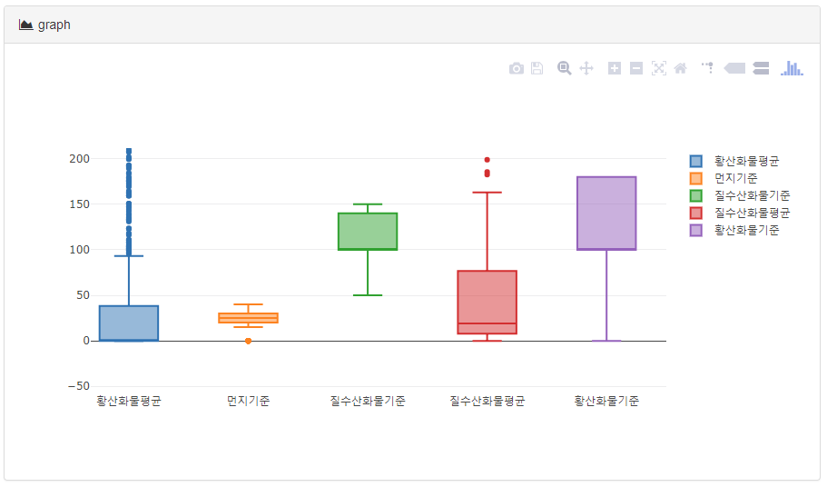
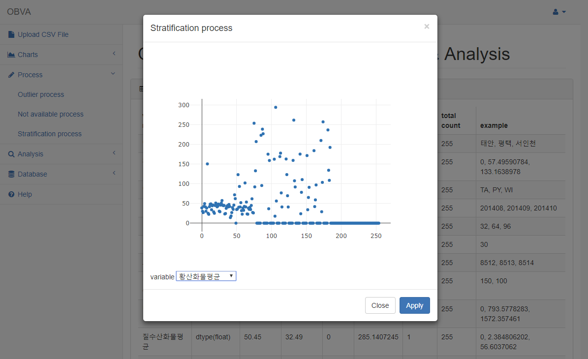

Open Bigdata Visualizaition Analasize

1. Upload CSV File
csv파일을 업로드 할 수 있다.

업로드를 하는순간 데이터의 요약본을 보여준다.

2. Charts
받아온 CSV 파일을 시각화 한다.

어떤 종류의 그래프를 그릴지 선택한뒤, 각각의 컬럼들을 보고 x축 y축을 선택하여 그래프를 그릴 수 있다.
2.1. Line graph
라인 그래프로 데이터를 시각화한다.

트렌드와 증가량 등을 나타낼 때 각각의 데이터양 뿐만 아니라 증감을 한눈에 볼 수 있는 장점이 있다.
2.2. Bar graph
막대 그래프로 데이터를 시각화한다.

값들이 뚜렷한 차이를 보이는 경우로 수치를 길이로 표현해 절대값을 갖는 막대를 배치함으로써 상대적인 차이를 한눈에 알아보는것이 가능하다.
바 차트는 가장 많이 활용되는 차트 중 하나로 특히 두가지 혹은 그 이상의 양을 비교할 때 효과적이다.\
2.3. Box graph
박스 그래프로 데이터를 시각화한다.


- 최솟값 : 제 1사분위에서 1.5 IQR을 뺀 위치이다.
- 제 1사분위(Q1) : 25%의 위치를 의미한다.
- 제 2사분위(Q2) : 50%의 위치로 중앙값(median)을 의미한다.
- 제 3사분위(Q3) : 75%의 위치를 의미한다.
- 최댓값 : 제 3사분위에서 1.5 IQR을 더한 위치이다.
최솟값과 최댓값을 넘어가는 위치에 있는 값을 이상치(Outlier)라고 부른다.
데이터 집합의 범위와 중앙값을 빠르게 확인 할 수 있는 목적으로 사용한다.
또한 통계적으로 이상치가 있는지도 확인이 가능하다.
2.4. Scatter graph
산점도 그래프로 데이터를 시각화한다.

산점도는 두 변수 간의 영향력을 보여주기 위해 가로 축과 세로 축에 데이터 포인트를 그리는 데 사용한다.
2.5. Pie graph
원 그래프로 데이터를 시각화한다.

한눈에 순위 비교가 가능하지만 정확한 수치데이터를 알기에는 부적합하다.
3. Preprocessing
3.1. Outier process
이상치란 정상 범주에서 크게 벗어난 값을 말한다. 데이터 수집 과정에서 오류가 발생할 수 있기 때문에 현장에서 만들어진 실제 데이터에는 이상치가 포함될 수 있다. 혹은 오류는 아니지만 굉장히 드물게 발생하는 값이 있을 수 있다.
이상치 처리는 이러한 이상치를 제거해주는 작업이다.

위의 빈칸에 원하는 최솟값, 최댓값을 넣어주면 그 값들의 사이의 값만 나오게 처리가 된다.
3.2. Not available process
결측치란 쉽게 생각하면 '없는 값' 이다.
데이터를 분석할때 데이터들은 오류를 포함하고 있거나 결측값(값이 빠지거나 비어있는 값)등을 처리하지않으면 데이터 분석이 제대로 되질 않는다. 그러므로 데이터 결측치 처리를 해주어야 한다.

결측값을 없애준다.
3.3. Stratification
데이터의 정보를 더 작고 더 관련성이 있는 정보로 나누면 데이터를 더 쉽게 이해 할 수 있다.
데이터 계층화는 미리 결정된 기준에 따라 데이터를 더 작고 정의된 계층으로 분리하는 것이다.

4. Analysis
4.1. Correlation
상관분석은 두 변수간의 어떤 선형적 관계를 갖고 있는 지를 분석하는 방법이다.
두 변수는 서로 독립적인 관계로부터 서로 상관된 관계일 수 있으며 이때 구변수간의 관계의 강도를 상관관계라고 한다.

- -1에 가까운 값 : 매우 강력한 음(-)의 상관. 오히려 너무 확고하기 때문에 일부 연구자들은 데이터를 조작한 게 아닌가 의심할 정도이다.사회과학 한정이다. 순수학문에 가까운 분야일수록 요구되는 상관관계는 높은 편.
- -0.5 정도의 값 : 강력한 음(-)의 상관. 연구자는 변인 x 가 증가하면 변인 y 가 감소한다고 자신 있게 말할 수 있다.
- -0.2 정도의 값 : 음(-)의 상관이긴 한데 너무 약해서 모호하다. 상관관계가 없다고는 할 수 없지만 좀 더 의심해 봐야 한다.
- 0 정도의 값 : 대부분의 경우, 상관관계가 존재하지 않을 것이라고 간주된다.
- 0.2 정도의 값 : 너무 약해서 의심스러운 양(+)의 상관. 이것만으로는 상관관계에 대해 아주 장담할 수는 없다. 하지만 사회과학에선 매우 큰 상관관계가 있는 것으로 간주한다.
- 0.5 정도의 값 : 강력한 양(+)의 상관. 변인 x 가 증가하면 변인 y 가 증가한다는 주장은 이제 통계적으로 지지받고 있다.
- 1에 가까운 값 : 매우 강력한 양(+)의 상관. 위와 마찬가지로, 이렇게까지 확고한 상관관계는 오히려 쉽게 찾아보기 어렵다.
4.2. Covariance
공분산은 2개의확률변수와 상관정도를 나타내는 값이다.
만약 2개의 변수중 하나의 값이 상승하는 경향을 보일 때, 다른 값도 상승하는 경향의 상관관계에 있다면, 공분산의 값은 양수가 될 것이다.
반대로 2개의 변수중 하나의 값이 상승하는 경향을 보일 때, 다른 값이 하강하는 경향을 보인다면 공분산의 값은 음수가 된다.

5. Database
5.1. Save in database
정제된 데이터를 데이터베이스에 저장할 수 있다.

5.2. Load from database
저장했었던 정제된 데이터를 불러 올 수 있다.